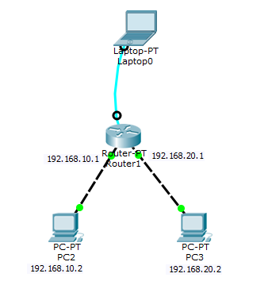
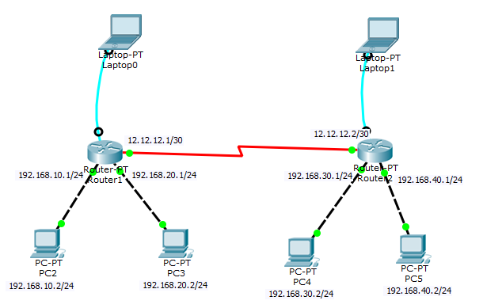
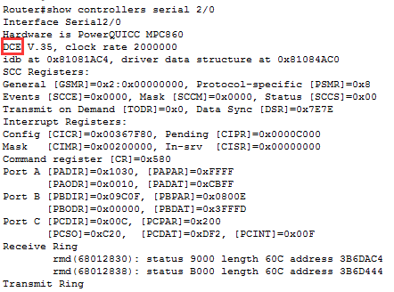
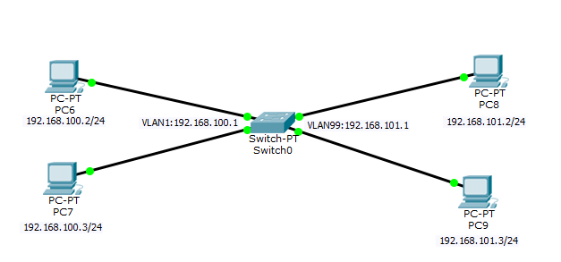

1.一台路由器下两台PC之间通讯
前提条件
路由器本身已经配置好了console，password，secret，vty对应的密码
配置操作
图示如下：

配置说明：
我的两台PC分别连接在路由器的FastEthernet 0/0和FastEthernet 1/0端口上，两台PC的IP分别是192.168.10.2与192.168.20.2，分别隶属于两个不同的网段，路由器的对应的连接端口上设置的IP为这两台PC的网关地址，分别为192.168.10.1与192.168.20.1
命令如下：
Router(config)#interface fastEthernet 0/0
Router(config-if)#ip address 192.168.10.1 255.255.255.0
Router(config-if)#no shutdown
Router(config-if)#exit
Router(config)#interface fastEthernet 1/0
Router(config-if)#ip address 192.168.20.1 255.255.255.0
Router(config-if)#no shutdown
Router (config-if)#exit
Router (config)#exit
Router #write
2.两台路由器之间互联且路由器下对应的PC之间可通讯
前提条件
路由器本身下的两台PC之间已经可以访问，并且两台路由器的各个密码都已经配置好。
配置操作
图示如下：

配置说明：
每台PC的IP如图所示，每台路由器下面的不同的网段之间可以通畅访问，但是两台路由器下的PC却不能访问另一台路由器下的PC，例如192.168.10.2/24的PC无法访问192.168.30.2/24这台PC，为止，路由器之间需要进行一些设置。（两台路由器之间的串口线接的口均为serial 2/0口，子网掩码使用255.255.255.252的原因是这样一个网段中就只有两个实际上可用的IP，避免资源浪费，同时实现点对点连接）
命令如下：
（左边路由器设置命令）
Router(config)#interface serial 2/0
Router(config-if)#ip address 12.12.12.1 255.255.255.252
Router(config-if)#no shutdown
Router (config-if)#exit
Router (config)#exit
Router #write
（右边路由器配置命令）
Router(config)#interface serial 2/0
Router(config-if)#ip address 12.12.12.2 255.255.255.252
Router(config-if)#no shutdown
Router (config-if)#exit
Router (config)#exit
Router #write
说明：
针对一些老式的路由器，我们还需要手动设定时钟频率，如果要设定时钟频率，我们必须要分清DTE与DCE的位置，因为是DCE（串行口母头）产生时钟频率，所以接下来我们使用命令查询哪一头是DCE头，并且设定时钟频率为56000。（具体的串口号结合自己的实际）
命令如下：
Router#show controllers serial 2/0
Router#configure terminal
Router(config)#interface serial 2/0
Router(config-if)#clock rate 56000
Router (config-if)#exit
Router (config)#exit
Router #write
使用命令后截图（很轻松的判断串行口的哪一端是DCE口，从而在对应的路由器中设置时钟频率）：

是目前左边的路由器可以ping通右边的路由器，但是两台路由器下的PC仍然不可以跨路由器进行通讯！因此，需要对路由器进行一些配置。
命令如下：
占位！！！！！！！！！！！！！！！！！！！！！！！！！！！！！！！！！！！！！
3.思科交换机下设置VLAN（交换机下的PC仍然属于一个网段）
前提条件
交换机本身已经配置好了console，password，secret，vty密码。
配置操作
图示如下：

配置说明：
查看该交换机的默认VLAN是多少（经过测试，发现该交换机的默认VLAN为VLAN 1），设置默认VLAN的IP与子网掩码，使得局域网内两台电脑192.168.100.2与192.168.100.3之间进行通讯，之后将交换机的Interface FastEthernet2/1与Interface FastEthernet3/1端口归属到VLAN 99端口上，再次配置VLAN 99端口的IP与子网掩码，进行测试。
命令如下：
Switch#show vlan brief
Switch#configure terminal
Switch(config)#interface vlan 1
Switch(config-if)#ip address 192.168.100.1 255.255.255.0
Switch(config-if)#no shutdown
Switch(config-if)#exit
Switch(config)#exit
Switch#write
Switch#configure terminal
Switch(config)#interface vlan 99
Switch(config-if)#ip address 192.168.101.1 255.255.255.0
Switch(config-if)#no shutdown
Switch(config-if)#exit
Switch(config)#interface fastEthernet 2/1
Switch(config-if)#switchport access vlan 99
Switch(config)#interface fastEthernet 3/1
Switch(config-if)#switchport access vlan 99
Switch(config)#exit
Switch#write
完成！！！